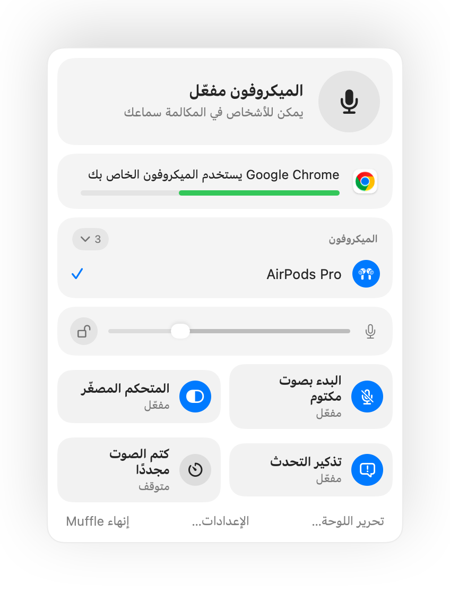
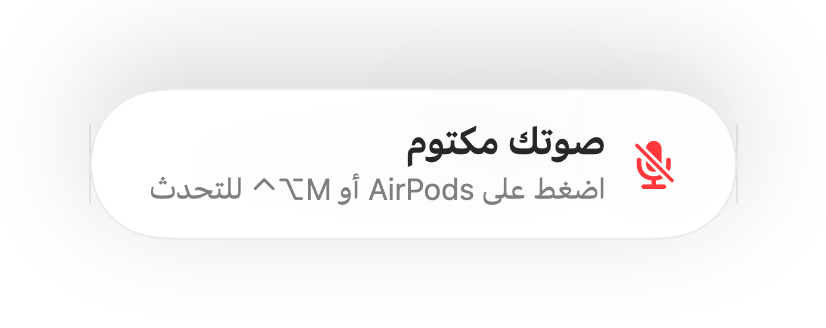
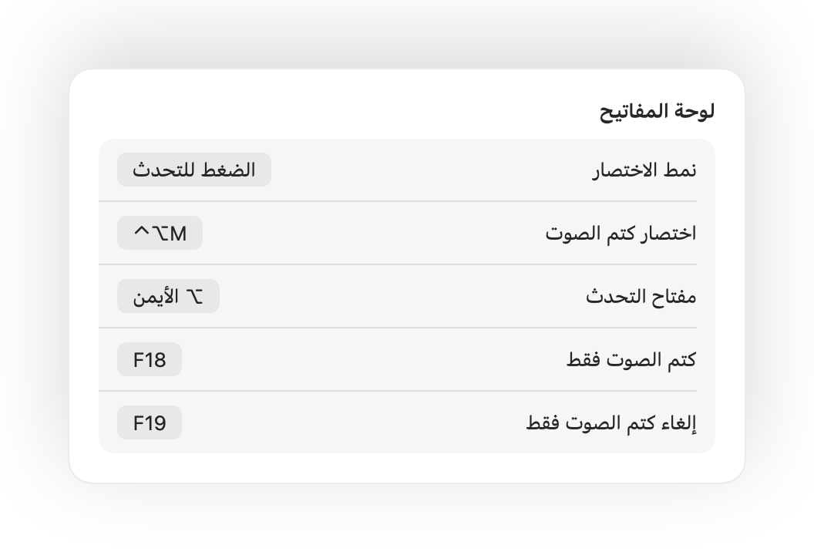
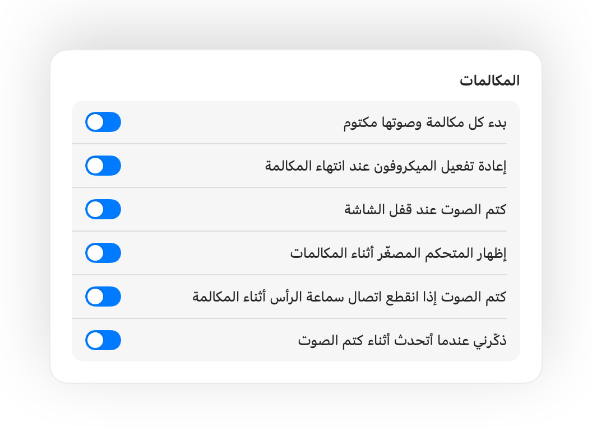

اضغط على AirPods لكتم الصوت
أثناء أي مكالمة، اضغط على الساق مرة واحدة لكتم الصوت ومرة أخرى لإلغاء الكتم. يعمل حتى في Chrome، حيث يتجاهل Google Meet ومكالمات الويب ضغطة AirPods.
Muffle لجهاز Mac
اضغط على AirPods أو استخدم اختصارًا من لوحة المفاتيح. يعطّل Muffle الميكروفون نفسه، ليصبح الصوت صامتًا تمامًا في Google Meet وZoom وTeams وSlack وأي تطبيق آخر.
مجاني لمدة 3 أيام، ثم دفعة واحدة بلا اشتراك. يعمل على macOS 14 Sonoma والإصدارات الأحدث.
اكتم الصوت، واختر الميكروفون، واقفل مستواه، وشغّل الميزات وأوقفها مباشرةً من شريط القوائم.
يكتم Muffle صوت الميكروفون على مستوى الجهاز نفسه، لذا لا يهم أي تطبيق أو متصفح أو علامة تبويب تستخدمه.
أثناء أي مكالمة، اضغط على الساق. يكتم Muffle صوت الميكروفون نفسه، فلا يسمع Meet أو Zoom أو Teams أو أي تطبيق آخر أي شيء.
يتعرف Muffle على صوتك ويذكّرك، قبل أن تشرح فكرتك كاملة دون أن يسمعك أحد.

معظم أزرار كتم الصوت تكتم تطبيقًا واحدًا فقط. يعطّل Muffle الميكروفون نفسه، بحيث لا يسمع أي تطبيق على Mac سوى الصمت.
أثناء أي مكالمة، اضغط على الساق مرة واحدة لكتم الصوت ومرة أخرى لإلغاء الكتم. يعمل حتى في Chrome، حيث يتجاهل Google Meet ومكالمات الويب ضغطة AirPods.
إذا بدأت في التحدث أثناء كتم الصوت، سينبهك Muffle قبل أن تشرح فكرتك كاملة دون أن يسمعك أحد.

يكتم اختصار Control-Option-M صوتك في كل مكان، حتى لو كانت المكالمة في علامة تبويب بالخلفية. اضغط عليه مطولاً لتتحدث أثناء كتم الصوت، وحرّره لكتم الصوت مجددًا.
زر عائم صغير يوضح حالة الميكروفون أثناء المكالمات. انقر عليه لكتم الصوت أو إلغاء كتمه.

اختر طريقة عمل الاختصار: الضغط للتبديل، أو الضغط المطول للتحدث، أو الضغط المطول لكتم الصوت عند السعال. أضف مفاتيح منفصلة لكتم الصوت وإلغاء كتمه، أو اضغط مطولاً على مفتاح واحد مثل ⌥ الأيمن أو زر ماوس إضافي.

هل ألغيت كتم الصوت لتقول شيئًا واحدًا؟ إذا التزمت الصمت بعد ذلك للمدة التي تختارها، يكتم Muffle صوتك مجددًا. يُحسب صوتك فقط، ولا تُحسب الكتابة أو الضوضاء المحيطة.
عند استخدام AirPods في غرفة هادئة، يقترح Muffle ميكروفون Mac لتشغّل AirPods المكالمة بالجودة الكاملة. وعندما يصبح المكان صاخبًا، يقترح ميكروفون AirPods.

تغيّر تطبيقات Chrome وZoom وTeams مستوى الميكروفون تلقائيًا. اقفل المستوى وسيعيده Muffle دائمًا إلى وضعه.
ابدأ كل مكالمة وصوتها مكتوم، وأعد تفعيل الميكروفون عند انتهاء المكالمة، واكتم الصوت تلقائيًا عند قفل شاشة Mac.

إذا انقطع اتصال سماعات الرأس أثناء مكالمة، يكتم Muffle الصوت قبل أن تنتقل المكالمة إلى ميكروفون Mac وتلتقط أصوات الغرفة بأكملها.
اكتم الصوت من تطبيق الاختصارات، أو عبر Siri أو Stream Deck أو Raycast، أو من خلال زر في مركز التحكم.
توهج أخضر أو أحمر حول الشاشة، وأيقونة ملونة في شريط القوائم، وزر عائم، وصوت يمكنك إيقافه لكل ميكروفون. فعّل ما يناسبك منها.
لا يسجّل Muffle الصوت أو يخزّنه أو يرسله أبدًا. يقتصر دوره على تشغيل الميكروفون وإيقافه وقراءة مستوى الصوت فقط. لا حسابات، ولا تحليلات، ولا تتبع.
ثبّت Muffle من Mac App Store واسمح بالوصول إلى الميكروفون.
انضم إلى مكالمة أو اجتماع فيديو في أي تطبيق، كالمعتاد.
اضغط على AirPods، أو اضغط على Control-Option-M، أو انقر على أيقونة شريط القوائم لكتم الصوت.
نعم. لا يرسل Chrome ضغطة كتم الصوت في AirPods إلى مكالمات الويب، لذا يلتقطها Muffle ويكتم صوت الميكروفون نفسه. وينطبق الأمر ذاته على أي مكالمة في علامة تبويب بالمتصفح.
قد يستمر تطبيق المكالمة في إظهار الميكروفون كمفعّل، لأن Muffle يعطّل الميكروفون نفسه بدلاً من زر التطبيق. سيسمع الآخرون صمتًا تامًا في الحالتين. وتتحول أيقونة Muffle في شريط القوائم إلى اللون الأحمر أثناء كتم الصوت.
طرازات AirPods Pro، وAirPods 3 والإصدارات الأحدث، وAirPods Max، بالإضافة إلى طرازات Beats التي تدعم عناصر التحكم في المكالمات. أما اختصار لوحة المفاتيح وشريط القوائم فيعملان مع أي ميكروفون.
نعم. يعمل Muffle مع كل تطبيق يستخدم الميكروفون على Mac، سواء كانت تطبيقات مثبتة أو مكالمات عبر المتصفح.
لا. جرّب كل ميزة مجانًا لمدة 3 أيام، ثم افتح Muffle بعملية شراء لمرة واحدة.
يرسل macOS ضغطة AirPods فقط إلى التطبيقات التي تستخدم الميكروفون، لذا يُبقي Muffle اتصالاً صامتًا مفتوحًا أثناء المكالمات. ولا يُسجَّل أي شيء على الإطلاق.
يعيد Muffle تفعيل الميكروفون تلقائيًا عند إنهائه، وبذلك لا يبقى صوتك مكتومًا بالخطأ.
نظام macOS 14 Sonoma والإصدارات الأحدث. يتطلب زر مركز التحكم نظام macOS 26 أو أحدث.
نعم. اختر «الضغط للتحدث» في الإعدادات واضغط مطولاً على الاختصار للتحدث. يمكنك أيضًا الضغط مطولاً على مفتاح فردي مثل ⌥ الأيمن أو fn، أو زر ماوس إضافي.
عندما تستخدم المكالمة ميكروفون AirPods، تنتقل AirPods إلى نمط المكالمات الذي يشغّل الصوت بجودة أقل. وفي الغرفة الهادئة، يقترح Muffle ميكروفون Mac بدلاً من ذلك، لتواصل AirPods تشغيل الصوت بالجودة الكاملة.
كلا. يتعرف Muffle على الكلام عبر ميزة تحليل الصوت على الجهاز من Apple، لذا يُحسب التحدث فقط. لا تُحسب الكتابة والنقرات والضوضاء المحيطة، ولا يُسجَّل أي شيء.
إجابات عملية ومباشرة لكتم صوت الميكروفون على Mac في كل تطبيق.
تجربة Muffle مجانية بالكامل لمدة 3 أيام.